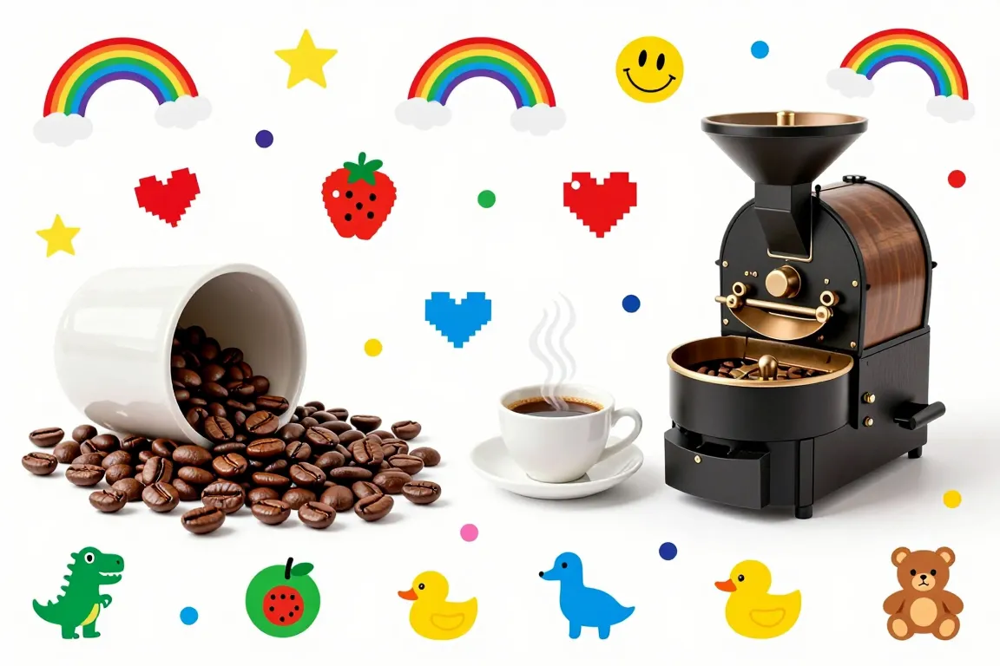

internet · 2019–now · also: Kid core, Rainbowcore, Nostalgiacore
Primary colours, rainbows, stickers, toys, cartoon animals and 1990s kid-show graphics, stacked in dense collage. It uses the childhood of the 1980s and 1990s as a happy, loud look.

Core thesis
Treat the childhood bedroom of the 1990s as a design system: bright, crowded and joyful on purpose.
Design principles
Use saturated primaries: red (#E8352E), blue (#2D5BFF), yellow (#FFD21F) and green (#2DBE60), on a white or pale yellow ground.
Fill 60% to 80% of the frame: stickers, stars, smileys, toys and rainbow arcs overlap by 8px to 24px.
Set headings in a chunky, round display face at 48px to 96px, with a 3px black outline or a hard 4px shadow.
Cut stickers with a 6px white border and a 3px hard shadow in #1B1B1B.
Use confetti, polka dots and checkers as patterns at 24px to 48px tiles.
Add a second layer of nostalgia: bubble type, a CRT frame or a cartoon cursor at 32px.
Rotate loose elements by -6° to +6° so nothing sits square.